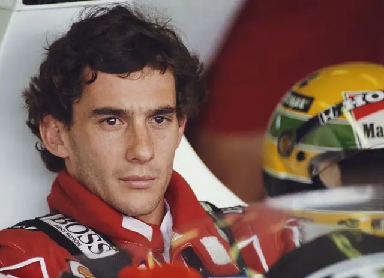
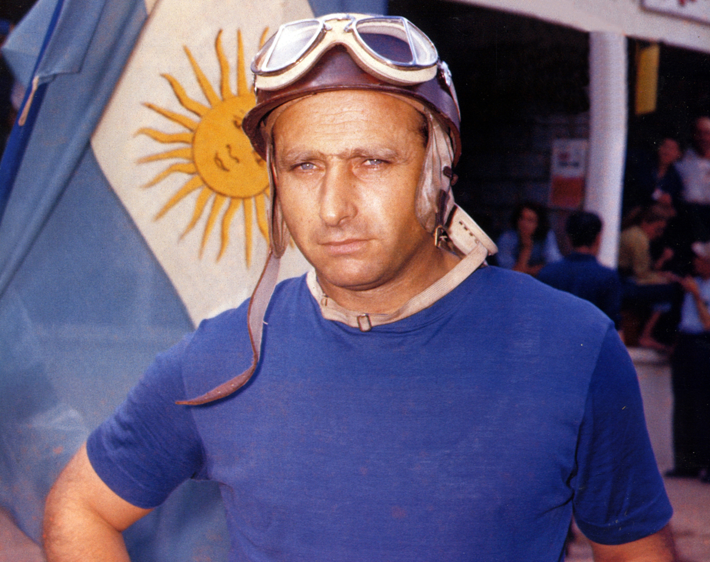
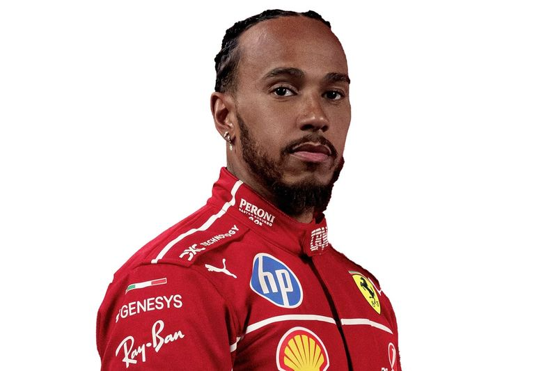
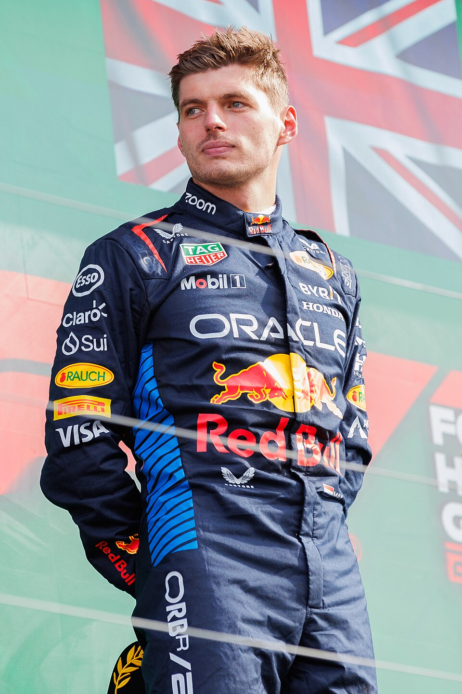
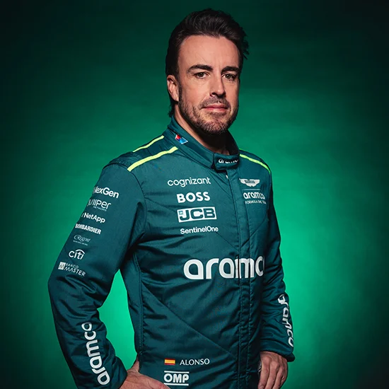

No hay un piloto más importante, influyente, dotado, admirado por sus colegas. Ayrton Senna es un ser mítico que hasta a la fecha maravilla. Otros han ganado más títulos y carreras, pero nadie lo hizo de la forma en que lo logró brasileño que cambió la F1 para siempre, que incluso con su muerte revolucionó la seguridad.
A quién le ganó y cómo ganó, así como los momentos mágicos en que hizo que todos se rindieran a sus pies provoca que, incluso la mayoría de los pilotos actuales de la F1, lo consideren el mejor.
Este lugar lo podría y debería compartir con Juan Manuel Fangio, pero a alguien hay que ponerle el número uno.
El gran “Chueco” de Balcarce, Juan Manuel Fangio ganó cinco títulos mundiales en siete años de competencia con cuatro equipos distintos, además de dos subcampeonatos.
Alfa Romeo, Mercedes, Ferrari y Maserati fueron sus “corceles” y Fangio los domó a todos en un tiempo en el que el primer logro era terminar las carreras con vida.
El argentino ganó 24 de las 51 carreras en que participó, más que nadie en el inicio de la F1.
Si se tratara solamente de estadísticas, Lewis Hamilton sería el número uno, pero hay algo más que acumular números.
La grandeza de Hamilton es innegable, más allá de ser un pionero, el hombre que rompió la barrera del color en la F1 y que dominó en la era triunfal de Mercedes.
Sus problemas para competir en la era del regreso del efecto suelo le restan algún mérito para estar más arriba, pero cualquiera de los cuatro primeros en esta lista puede ser mencionado hasta arriba y no pasa nada.
Para una generación de aficionados, no hay nadie más grande que Schumi. El alemán elevó las fronteras de todas las estadísticas y devolvió la grandeza a Ferrari con base en un trabajo titánico y un talento generacional.
La muerte de Senna nos privó del placer de verlos competir más tiempo y en circunstancias similares y también le negó a Schumacher el gusto de la comparación directa, aunque fuera en edades muy dispares.
Los grandes momentos de Schumacher no dejan de competir con sus días más bajos donde su comportamiento en la pista fue señalado.

Talento en estado puro. Velocidad y dominio en un tiempo donde llevar a un auto más allá de los límites era una sentencia de muerte.
Clark sólo ganó dos títulos antes de morir en un F2, pero su porcentaje de triunfos (34.7%) es, todavía, el mejor sólo debajo de Fangio.

El piloto que ganaba a la menor velocidad posible. El gran estudioso de las pistas y apóstol de la seguridad y gracias a quien los cinturones de seguridad se volvieron obligatorios.
Sus 99 Grandes Premios le alcanzaron para tres títulos mundiales en medio de una competencia feroz que incluía monstuos como Clark, Hill, Fittipaldi, Lauda.

El hombre que volvió del infierno. El piloto más ingeniero de la F1. El austriaco que profesionalizó el trabajo del piloto y que buscaba la seguridad al tiempo que lo arriesgaba todo en cada curva.
Niki ‘The Rat’ Lauda impuso nuevos estándares de manejo y enfoque, además que luego de su horrible accidente tuvo el coraje de volver a las pistas todavía con las heridas frescas.

Tiene 27 años y parece que todavía podemos ver mucho más del neerlandés que por momentos hace recordar lo mismo a Senna que Schumacher.
Una máquina que se ha aceitado al grado de no permitirse errores. Es el mejor de su generación y como Senna, extrae de los autos tiempos que no tienen.
Una calculadora con manos. Un genio que logró vencer el talento de Senna en el mismo auto. Alain Prost era la consistencia y la frialdad tras el volante.
La grandeza de Senna no se puede explicar sin sus grandes rivales y esa lista la encabeza Prost, quien también puede presumir haber brillado en los tiempos en que Mansell, Patrese, Lauda, Piquet tenían el talento para haber arrasado con otras generaciones.

El asturiano tiene 407 Grandes Premios y ‘solamente’ 32 triunfos, pero es reconocido por sus pares como un prodigio del volante.
Que las estadísticas no los engañen. Tener dos títulos de Campeón no lo hacen menos frente a otros que con vitrinas más nutridas. El oficio de ser piloto se puede definir con su biografía y su talento y conocimiento ha evolucionado como los monoplazas que le han tocado desde que debutó en 2001.
